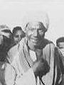
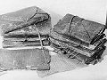
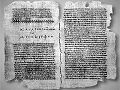

The ICPA is a private association created by friends and colleagues of journalist Jack Lorski in the wake of his murder in Scotland. The ICPA is aimed at helping international police and law departments to bring a swift end to the Phoenix's killing spree.
SKL NETWORK is the agency that Jack Lorski worked for. It decided to go public with the two CD-ROMs received from the Phoenix.
LIBERATION.FR has published several articles on the Phoenix case. Use its search engine to access its archives.
THE CODEX 14 OF NAG HAMMADI
Investigators have long believed that the Phoenix's sole motivation was to exact a double vengeance against the secret society Manus Domini: to avenge Professor Peter Volker, murdered in 1975 by henchmen of this organization, and to avenge the philosopher Giordano Bruno, burned alive in 1600 by the Inquisition, of which Manus Domini is a resurgence. However, the murder of Alex Borgo has proven that the Phoenix has another, much more important goal: to find and seize an ancient manuscript discovered in 1945 at Nag Hammadi and known as "Codex 14."
To better understand why the killer is so interested in this book, which he himself describes as cursed, we remind you below of the history of its discovery and the list of its various owners.
- History of the discovery of the Nag Hammadi codices
In December 1945, near the town of Nag Hammadi in Egypt, Mohammed Ali Samman (Photo 1), an Egyptian peasant, accidentally unearthed a jar containing several papyrus codices, volumes bound flat like our books and covered in leather (Photo 2). He had just made one of the most remarkable discoveries of ancient manuscripts of the 20th century.
In varying states of preservation, the hundreds of inscribed pages contain more than fifty different works, most of them unknown, including the famous Gospel of Thomas, a collection of Jesus' sayings. These are religious texts, generally described as Gnostic. Probably originally written in Greek, during the 1st and 2nd centuries, most of these texts were later translated into Coptic, the language of Egypt at that time. Around the middle of the 4th century, they were copied into codices that were finally buried in a jar at the beginning of the 5th century.This discovery is of inestimable interest, whether for the history of the book, of which the Nag Hammadi codices constitute the oldest specimens, for the history of the Coptic language and paleography, or for that of philosophy and nascent Christianity.
These texts indeed revive for us the forms of primitive Christianity that later tradition fought against and tried to eradicate, but which nevertheless played an essential role in its formation. Their publication, their translation into modern languages, and their study, which is still in its infancy, therefore open a new window on the period of the 1st and 2nd centuries, so important in the formation of Christianity. However, the interpretation of these new texts is particularly difficult. We do not know the identity of their authors, the places, dates, and circumstances of their writing in Greek, their transmission, their translation into Coptic, and their copying in the codices brought to light in 1945. Laborious research nevertheless allows us to situate them in their context and to extract from them a great deal of information that sheds new light on the history of the first Christian centuries. Thus, to give just one example, the Gospel of Thomas has become a centerpiece of research on the historical figure of Jesus and the origins of Christianity.
- The "cursed" route of Codex 14
By Muhammad Ali Samman's own admission, some of the papyri found at Nag Hammadi were lost, thrown away, and even burned, so it will never be known exactly how many codices were hidden in the jar. Officially, 13 codices have been identified and studied to date, but it is known that shortly after their discovery, all the manuscripts were sold on the black market, so it is likely that the current Nag Hammadi library is not complete and that additional books are still circulating in the wild.
This is also the case with Codex 14, which interests the Phoenix so much. To this day, this mysterious book has never left the parallel market of ancient manuscripts, known only to a few insiders, and its contents have therefore never been brought to the attention of historians and scientists. Since 1945, its incredible journey, retraced and classified below according to its various owners, has been strewn with enigmas and violent deaths, the number of which has continued to grow since the Phoenix decided to seize it.
• Mohammed Ali Samman
At the time of its discovery, Mohammed Ali Samman was embroiled in a vendetta following his father's murder. Determined to avenge him, he and his brothers assassinated Ahmed Ismail, the culprit, who was passing through the region a few weeks later. Fearing reprisals from the police, the Egyptian peasant then decided to get rid of the codices, whose commercial and historical value he was completely unaware of.
• Bahij Ali
The collection was then divided into three parts: the first was recovered by the cleric Al-Qummus Basiliyus Abdel Masih, the second by the antiquarian Albert Eid and the third, containing codex 14, by Bahij Ali, a notorious outlaw, originally from the same village as Samman.
• Phocion J. Tano
Very quickly, this last part of the codices was sold on the black market to Phocion J. Tano, a famous Cypriot antique dealer in Cairo. When the Egyptian government, which wanted to reunite the entire Nag Hammadi library, tried to buy it, the antique dealer claimed that they were in the possession of an Italian collector, Mademoiselle Dattari. He simply "forgot" to specify that one of the codices, the famous fourteenth, certainly of much greater value than the others, had been sold in the greatest secrecy to another buyer.
• Alfredo Malardi
From the early 1950s onwards, the whereabouts of Codex 14 are more difficult to determine. However, its whereabouts can be traced back to the death of Alfredo Malardi, a great Italian collector of ancient books. Letters found in his office prove that he was in possession of the precious manuscript; it is even possible, even probable, that he was the mysterious buyer whose name Phocion Tano always wished to remain secret.
It is worth noting that Malardi's death was sudden and unexpected, but the Italian police still concluded that it was suicide. Some people (Jim Leroy, the Phoenix, and others) are nevertheless convinced that he was murdered by a secret organization (Manus Domini?) that wanted to recover the manuscript at all costs.
• Thomas A. Malko
During the investigation into Alex Borgo's death, we learned that Codex 14 was owned by Thomas Anton Malko, the great-uncle of Carolina Molikova, the ninth victim of the Phoenix. We now know that the manuscript was sold directly to him by Alfredo Malardi, a few days before his death.
Like Malardi, Thomas Malko died prematurely and unexplained, and the same suspicions of murder as those of the Italian collector hover over his death.
• Peter Volker (Photo 3)
By pure chance, Professor Peter Volker, a leading scholar of ancient languages, discovered the now "cursed" Codex 14. After months of dealing, he acquired it in 1973 through Thomas Malko's daughter.
Volker disappeared body and soul two years later on the island of Rhodes (Greece). Thanks to the 2001 investigation conducted by Jack Lorski and its consequences, we now have proof that the professor was executed in cold blood by members of Manus Domini.
Since this tragic death, no one knows what happened to Codex 14.
Did Peter Volker's family secretly inherit it? Did the Manus Domini organization recover it after the professor's murder? The Phoenix claims he knows how to recover Codex 14, but how could he have found it? And above all, what could this Codex 14 contain, which seems to justify so much misfortune on its own? A writing more important than Codex II, containing the Gospel of Thomas (Photo 4)? A revelation so important that it arouses a thousand desires, stigmatizes those who are interested in it... and kills those who approach it?
Codex 14 is certainly the key to this whole affair, known as the Phoenix, and perhaps others, much older, but like Pandora, what door does this evil key open?
- Links
• The Nag Hammadi Library
• Jim Leroy's personal website
• Volker Institute website